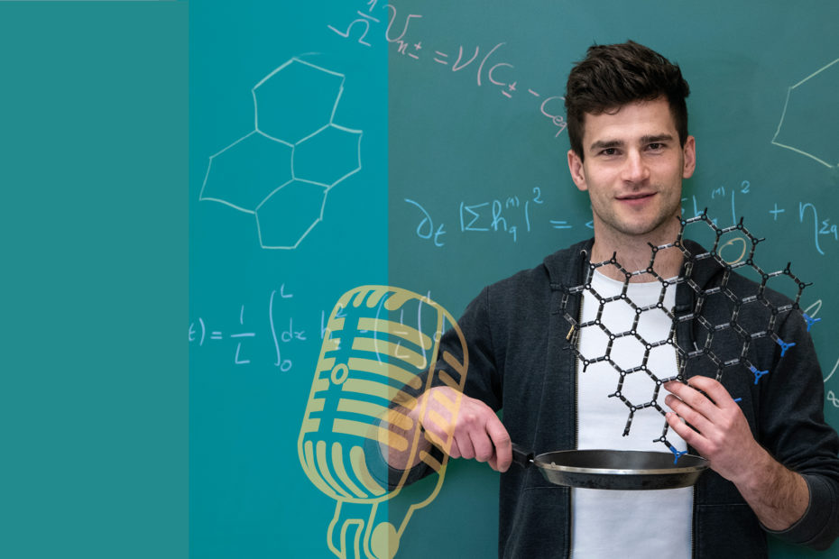

Outils mathématiques : niveau 1 (BUT1 GCGP)
Poly (PDF)Calculs élémentaires, équations, fonctions usuelles, dérivées, intégrales, polynômes, calculs d'erreur, trigonométrie. 14 × 2 h
Bibliothèque personnelle
Cours, annales, publications, interventions, contenus de vulgarisation et archives média réunis dans une structure plus claire, plus ample et pensée pour une consultation rapide.
Parcours académique.
Exemples de cours, polys, supports et sujets, structurés par niveau pour garder une consultation claire même lorsque le volume augmente.
Calculs élémentaires, équations, fonctions usuelles, dérivées, intégrales, polynômes, calculs d'erreur, trigonométrie. 14 × 2 h
Fonctions de plusieurs variables, intégrales, équations différentielles, fractions rationnelles. 14 × 2 h
Utilisation d'Excel. 5 × 4 h
Lire (PDF)Transferts thermiques, électricité, mécanique des fluides. 5 × 4 h / groupe
Analyse, dérivées, intégrales, calcul matriciel, fonctions de plusieurs variables, optimisation numérique, algorithmique. 7 × 2 h
Probabilités, loi de répartition, statistiques, fiabilité, échantillonnage. 5 × 2 h
Équations différentielles, nombres complexes, transformée de Laplace, diagrammes de Bode, applications à la modélisation. 8 × 2 h
Lire (PDF)Plan de criblage PB, plan factoriel complet, plan composite centré, optimisation par surface de réponse. 7 × 2 h
Certification TOEIC, soutenance de stage, synthèse d'article, présentation scientifique, vulgarisation. 8 × 2 h
Ateliers Fête de la science, préparation au concours d'éloquence. 10 × 2 h
Coordination, pilotage de formations et missions nationales.
Travaux en physique statistique, systèmes hors-équilibre et dynamique d'interfaces.
Articles, manuscrit et communications.
B. Marguet, Manuscrit de thèse, 2022
Lire (PDF)B. Marguet, FDAA Reis, O. Pierre-Louis - Physical Review E, 2022
Lire (PDF)FDAA Reis, B. Marguet, O. Pierre-Louis - 2D Materials, 2022
Lire (PDF)B. Marguet, E. Agoritsas, L. Canet, V. Lecomte - Physical Review E, 2021
Lire (PDF)O. Vincent, B. Marguet, A.D. Stroock - Langmuir, 2017
Lire (PDF)Ateliers, conférences et séminaires.
Vidéos, outils interactifs et simulateurs.
Deux exemples de vidéos créées pour mes enseignements :
Deviner une fonction cachée à partir de ses valeurs.
Simulations interactives déployées sur Streamlit pour l'enseignement de l'automatisme-régulation.
Vidéos, podcasts et interventions.
 Télévision
BFM Lyon
Télévision
BFM Lyon
 Podcast
RCF Lyon
Podcast
RCF Lyon

Podcast Sciences en récits